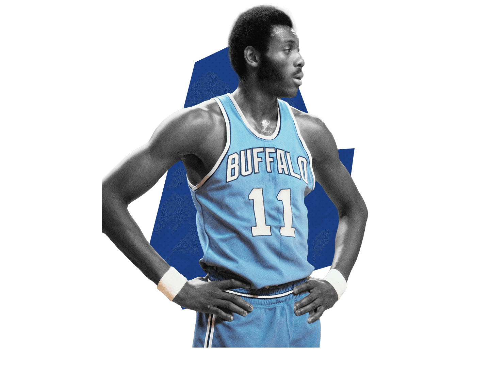
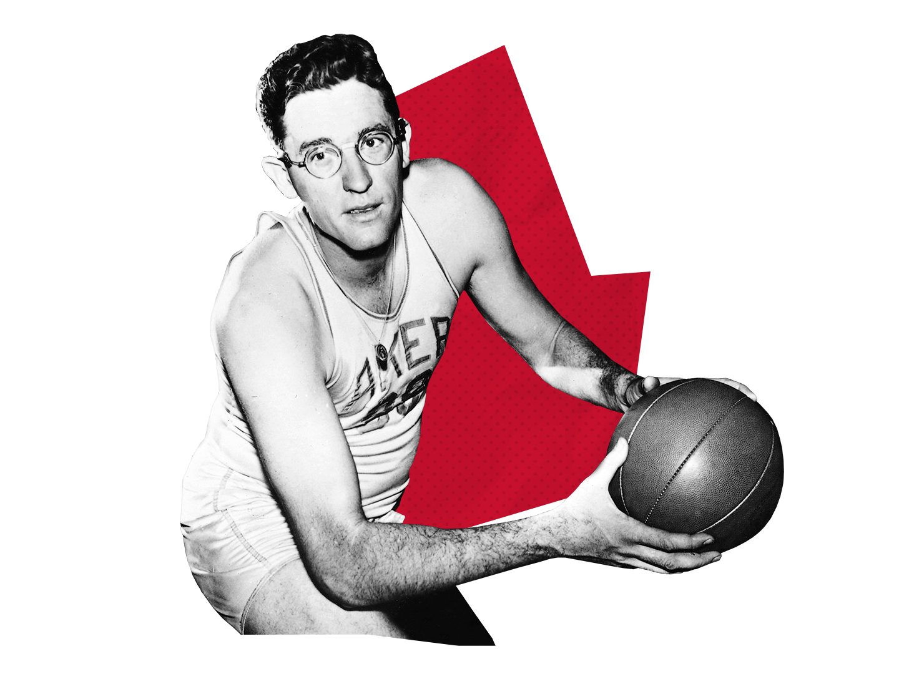
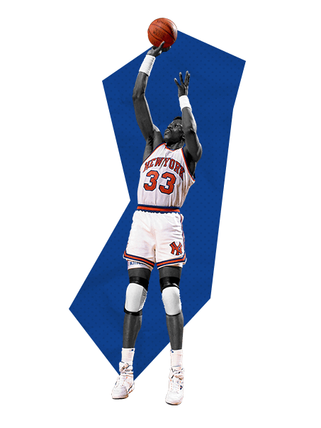
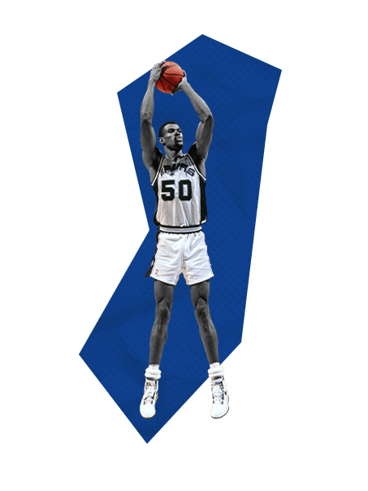
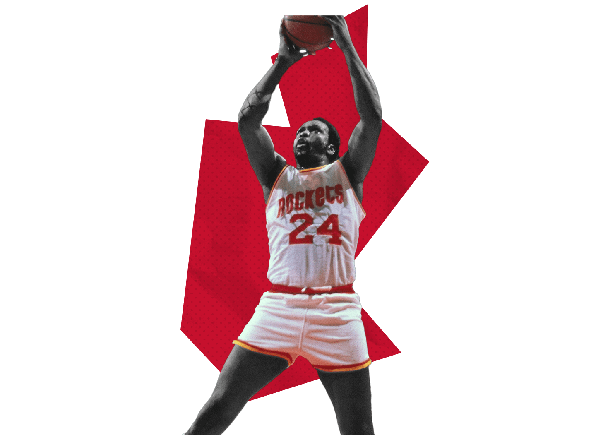
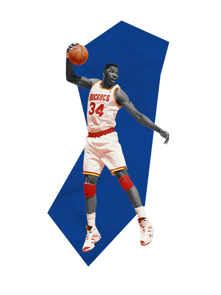
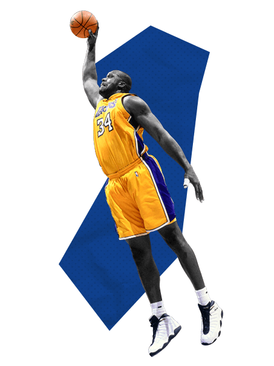
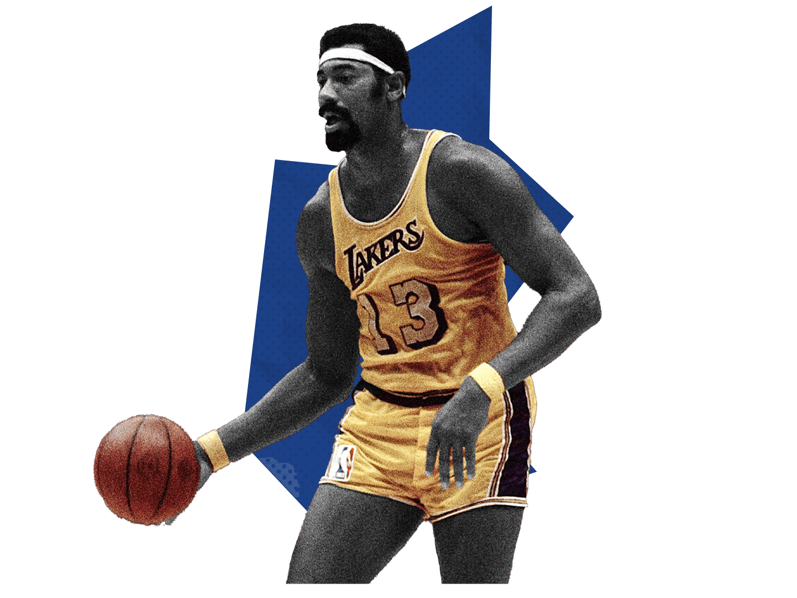
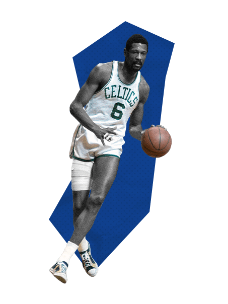
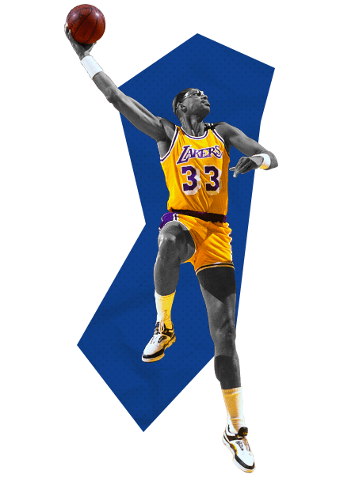

10. Bob McAdoo |
|

|
Accolades
- 2 Championships (1982,1985)
- 1 MVPs (1975)
- 5 Time All-Star
- 2 Time All-NBA
- 3 Scoring Titles
- ROTY (1973)
- NBA Top 75 All Time
- HOF
Teams
- Buffalo Braves (1972-1976)
- New York Knicks (1976-1979)
- Boston Celtics (1978-1979)
- Detroit Pistons (1979-1981)
- New Jersey Nets (1980-1981)
- Los Angeles Lakers (1981-1985)
- Philidelphia 76ers (1985-1986)
Stats
- 22.1 PPG
- 9.4 RPG
- 2.3 APG
- 1.0 SPG
- 1.5 BPG
|
9. George Mikan |
|

|
Accolades
- 5 Championships (1949, 1950, 1952, 1953, 1954)
- 0 MVPs
- 4 Time All-Star
- 1 Time All-Star MVP
- 6 Time All-NBA
- 2 Rebound Titles
- 3 Scoring Titles
- NBA Top 75 All Time
- HOF
Teams
- Minneapolis Lakers (1948-1956)
Stats
- 23.1 PPG
- 13.4 RPG
- 2.8 APG
- Not Recorded SPG
- Not Recorded BPG
|
8. Patrick Ewing |
|

|
Accolades
- Championships None
- MVPs None
- 11 Time All-Star
- 7 Time All-NBA
- ROTY (1986)
- 3x All-Defensive
- 7th All-Time Blocks
- NBA Top 75 All Time
- HOF
Teams
- New York Knicks (1985-2000)
- Seattle SuperSonics (2000-2001)
- Orlando Magic (2001-2002)
Stats
- 21.0 PPG
- 9.8 RPG
- 1.9 APG
- 1.0 SPG
- 2.4 BPG
|
7. David Robinson |
|

|
Accolades
- 2 Championships (1999,2003)
- 1 MVPs (1995)
- 10 Time All-Star
- 10 Time All-NBA
- 1 Rebound Titles
- 1 Block Title
- 1 Scoring Titles
- DPOY (1992)
- ROTY (1985)
- 8x All-Defensive
- 6th All-Time Blocks
- NBA Top 75 All Time
- HOF
Teams
- San Antonio Spurs (1989-2003)
Stats
- 21.1 PPG
- 10.6 RPG
- 2.5 APG
- 1.4 SPG
- 3.0 BPG
|
6. Moses Malone |
|

|
Accolades
- 1 Championships (1983)
- 3 MVPs (1979, 1982, 1983)
- 1 Final MVPs (1983)
- 13 Time All-Star
- 8 Time All-NBA
- ABA All-Time Team
- 6 Rebound Titles
- DPOY (1988)
- ROTY (1985)
- 2x All-Defensive
- 5th All-Time Rebounds
- 9th All-Time Scoring
- NBA Top 75 All Time
- HOF
Teams
- Utah Stars (1974-1975) ABA
- Spirits of St. Louis (1975-1976) ABA
- Buffalo Braves (1976-1977)
- Houston Rockets (1976-1982)
- Philidelpha 76ers (1982-1986,1993-1994)
- Washington Bullets (1986-1988)
- Atlanta Hawks (1988-1991)
- Milwaukee Bucks (1991-1993)
- San Antonio Spurs (1994-1995)
Stats
- 20.6 PPG
- 12.2RPG
- 1.4 APG
- 0.8 SPG
- 1.3 BPG
|
5. Hakeem Olajuwon
|
|

|
Accolades
- 2 Championships (1994, 1995)
- 1 MVPs (1994)
- 2 Final MVPs (1994,1995)
- 12 Time All-Star
- 12 Time All-NBA
- 2 Rebound Titles
- 3 Block Titles
- 2 DPOY (1993, 1994)
- 9x All-Defensive
- 1st All-Time Blocks
- 9th All-Time Steals
- 12th All-Time Scoring
- 14th All-Time Rebounds
- NBA Top 75 All Time
- HOF
Teams
- Houston Rockets (1984-2001)
- Toronto Raptors (2001-2002)
Stats
- 21.8 PPG
- 11.1 RPG
- 2.5 APG
- 1.7 SPG
- 3.1 BPG
|
4. Shaquille O'Neal
|
|

|
Accolades
- 4 Championships (2000, 2001 ,2002, 2006)
- 1 MVPs (2000)
- 3 Final MVPs (2000,2001,2002)
- 15 Time All-Star
- 3 Time All-Star MVP
- 14 Time All-NBA
- 2 Scoring Titles
- ROTY (1993)
- 2x All-Defensive
- 8th All-Time Scoring
- 8th All-Time Blocks
- NBA Top 75 All Time
- HOF
Teams
- Washington Wizards (1992-1996)
- Los Angeles Lakers (1996-2004)
- Miami Heat (2004-2008)
- Phoenix Suns (2007-2009)
- Cleveland Cavaliers(2009-2010)
- Boston Celtics (2010-2011)
Stats
- 23.7 PPG
- 10.9 RPG
- 2.5 APG
- 0.6 SPG
- 2.3 BPG
|
3. Wilt Chamberlain
|
|

|
Accolades
- 2 Championships (1967, 1972)
- 4 MVPs (1960, 1966, 1967, 1968)
- 1 Final MVPs (1972)
- 13 Time All-Star
- 1 Time All-Star MVP
- 10 Time All-NBA
- 11 Rebound Titles
- 7 Scoring Titles
- 1 Assist Title
- ROTY (1960)
- 2x All-Defensive
- 7th All-Time Scoring
- 1st All-Time Rebounds
- NBA Top 75 All Time
- HOF
Teams
- Philidelphia Warriors/San Fransisco Warriors (1959-1964)
- Philidelphia 76ers (1964-1968)
- Los Angeles Lakers (1968-1973)
Stats
- 30.1 PPG
- 22.9 RPG
- 4.4 APG
- Not Recorded SPG
- Not Recorded BPG
|
2. Bill Russel |
|

|
Accolades
- 11 Championships (1957, 1959-66, 1968, 1969)
- 5 MVPs (1958, 1961, 1962, 1963, 1965)
- 12 Time All-Star
- 1 Time All-Star MVP
- 11 Time All-NBA
- 4 Rebound Titles
- 1x All-Defensive
- 2nd All-Time Rebounds
- NBA Top 75 All Time
- HOF
Teams
- Boston Celtics (1956-1969)
Stats
- 15.1 PPG
- 22.5 RPG
- 4.3 APG
- Not Recorded SPG
- Not Recorded BPG
|
1. Kareem Abdul-Jabbar
|
|

|
Accolades
- 6 Championships (1980, 1982, 1985, 1987-88)
- 6 MVPs (1988,1991-1992,1996,1998)
- 2 Final MVPs (1991-1993, 1996-1998)
- 19 Time All-Star
- 3 Time All-Star MVP
- 15 Time All-NBA
- 4 Block Titles
- 2 Scoring Titles
- DPOY (1988)
- ROTY (1970)
- 11x All-Defensive
- 1st All-Time Scoring
- 3rd All-Time Blocks
- 3rd All-Time Rebounds
- NBA Top 75 All Time
- HOF
Teams
- Chicago Bulls (1984-1998)
- Washington Wizards (2001-2003)
Stats
- 30.1 PPG
- 6.2 RPG
- 5.3 APG
- 2.3 SPG
- 0.8 BPG
|